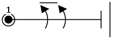
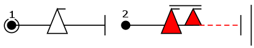
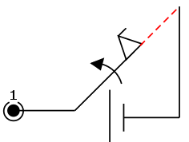

OpenAero Sequenz-Codes
Dies ist eine detailierte Anleitung zu den Sequenzcodes, die von OpenAero zum Erstellen von Kunstflug-Sequenzen verwendet werden. Die Buchstabennotation ("One Letter Aerobatic Notation") wurde ursprünglich von Michael Golan für seine OLAN-Software erstellt. Diese Art der Notation bildet den Kern von OpenAero, Kunstflugsequenzen als eine Aneinandereihung von Zeichenketten auszudrücken, was einerseits schnelles und unwidersprüchliches Erstellen der Sequenzen, wie auch das Prüfen der Sequenzen mit Hilfe von Listenvergleichen und -routinen erlaubt.
Das Erlernen dieser Sprache ist nicht notwendig um OpenAero anzuwenden, es empfiehlt sich allerdings die Sprache zu verstehen, um einerseits Sequenzen rapide zu erstellen, Figurenvorschläge "just in time" zu verarbeiten (z.B. dann im Figurengitter) und eine Sequenz infolge einer Fehleingabe zu debuggen. Um eigene Freestyle-Figuren (Nicht-Aresti) ins OpenAero zu bringen, ist die Kenntnis dieser Sprache jedoch Grundvorraussetzung.
Zum rasanten Erlernen dieser Sprache ist es empfehlenswert, zunächst Abschnitt für Abschnitt hier durchzulesen und die jeweils darin aufgebotenen Beispiele (fett hervorgehoben) parallel selbst in OpenAero einzugeben.
Ein einführendes Beispiel
Die untere Zeichenkette zeigt die Bekannte Pflicht der CIVA-Unlimited Kategorie von 2013 im Motorkunstflug:
+,2,2f'zt,2f;2+~ 2> ~~7,3m,5if,3 [0,19] 24ip1 3> 2% ~```,s,3if...ibpb(```3)..,3f,4'> ifh5f.. 3> .8'rp(44)9> [0,8] ~++3joi15-----~ [-3,2] -.,4taf.> 34pb3^.
Sie können die komplette Zeichenfolge kopieren und in der OpenAero-Sequenzzeile einfügen, um die Sequenz in OpenAero anzuzeigen.
Wer nun meint, dass diese Zeichenfolge nach kryptischen Chiffren aussieht, liegt, streng genommen, falsch. Zwar ist das auf den ersten Blick natürlich ohne Hintergrundkenntnisse unverständlich, so wie es auch die Figurensymbole für ungeschulte Augen sind, aber trotzdem handelt es sich hier in der Tat (wie bei den Figursymbolen auch) um OpenAero-Klartext. Der Unterschied zwischen kryptischen Chiffren und Klartext ist nämlich der, dass bei kryptischen Chiffren jedes Zeichen im Grunde keine bijektive Abbildung zu einer Bedeutung hat, sondern kontext(schlüssel)-abhängig verstanden werden muss. Hier jedoch hat der ein und derselbe Basisfigur-Buchstabe, das Rollenelement-Zeichen, sowie jedes der Sonderanweisungszeichen immer die selbe Bedeutung - kontextunabhängig.
Zerlegt man nun diese Zeichenfolge immer bei den in ihr enthaltenen Leerzeichen, dann lässt sich bereits vorläufig grob entschlüsseln (durch einzelnes Ausprobieren in OpenAero), um was es sich dabei handelt:
| +,2,2f'zt,2f;2+~ | die erste Figurdefinition - genaueres dazu wird in den folgenden Abschnitten erklärt |
| 2> | eine Formatanweisung zum Zeichnen der nächsten Figur 2 Feldeinheiten weiter entfernt |
| ~~7,3m,5if,3 | die zweite Figurdefinition |
| [0,19] | eine gerade Verbindungslinie (gestrichelt, 19 Feldeinheiten hinab, 0 lateral) zur nächsten Figur |
| 24ip1 | die dritte Figurdefinition |
| 3> | eine Formatanweisung zum Zeichnen der nächsten Figur 3 Feldeinheiten weiter entfernt |
| 2% | eine Formatanweisung zum Zeichnen der nächsten Figur 2% größer skaliert |
| ~```,s,3if...ibpb(```3)..,3f,4'> | die vierte Figurdefinition |
| usw. | usf. |
Hieran lässt sich bereits auch erkennen, dass die Abfolge der durch Leerzeichen getrennten Zeichenketten streng der Abfolge der Figuren folgt. Dies gilt ebenso innerhalb einer Figurdefinition. Die Abfolge der Zeichen folgt der Abfolge der Figurbestandteile.
Basisfiguren (Familie 1-8)
Die Zeichenketten für jede einzelne Figur (bestehend aus mindestens einem Buchstaben zur Identifikation der Basisfigur) werden durch mindestens ein Leerzeichen voneinander getrennt. Der allseits bekannte Loop wird beispielsweise mit einem "o" ausgedrückt; zwei aufeinander folgende Loops mit "o o". Beachten Sie hier das Leerzeichen zur Figurentrennung! Wird stattdessen "oo" ohne Leerzeichen eingegeben, erkennt OpenAero in diesem Fall eine einzige andere Basisfigur; in anderen Fällen erscheint aber eine Fehlermeldung. Die Buchstabenvergabe für jede Basisfigur orientiert sich an pragmatischen Wiedererkennungswerten, also z.B. das runde "o" für einen runden Loop, oder auch den Anfangsbuchstaben der englischsprachigen Figurennamen, z. B. "h" für hammerhead (=Stall Turn). Leider erscheint eine völlig logische Abkürzungssystematik in Anbetracht der Vielzahl von Basisfiguren unmöglich. Eine einfache, aber nicht unbedingt komplette Referenzliste ist im unteren Abschnitt bereitgestellt. Sämtliche Basisfigurbuchstaben (auch für Nicht-Aresti-Figuren) können mit dem Figurenauswahlmenu von jedem Anwender in Erfahrung gebracht werden.
Jede Figur beginnt und endet entweder in Normalfluglage (bauchlagig) oder in Rückenfluglage (rückenlagig). OpenAero versteht ohne weitere Symbolanweisung standardmässig, dass eine Figur bauchlagig beginnt und endet. Bei Figuren, für die dies nicht zutrifft, die also z.B. bauchlagig beginnen und rückenlagig enden (oder andersrum), gibt OpenAero eine Fehlermeldung zurück solange nicht der rückenlagige Ausgang bzw. Eingang deklariert wurde. Um dies zu tun, wird ein Minuszeichen "-" als immer erster Präfix (Eingang) oder immmer letzter Suffix (Ausgang) in der Zeichenfolge der Figur verwendet. Hier darf es kein Leerzeichen zwischen dem Minuszeichen und dem Figurbuchstaben geben. Für eine halbe kubanische Acht ohne Rollenelement schreibt man also z.B. "-c" für rückenlagigen Eingang oder "c-" für rückenlagigen Ausgang.
Für einige Basisfiguren existieren "umgekehrte Varianten", z. B. dem Käseeck. Hiermit ist beim Käseeck gemeint, dass es einerseits jene gibt, bei denen eine vertikale auf eine diagonale Linie folgt, und dann andererseits die umgekehrten Varianten also jene sind, bei denen eine diagonale Linie auf die vertikale Linie folgt. Viele, aber nicht alle, anderen Basisfiguren kann man ebenso als Kombinationen von verschiedenen Linien und Bögen begreifen, auf die dieses Prinzip ebenso anwendbar ist. Weiterhin gibt es "invertierte Varianten", welche mit zuvor genannten nicht zu verwechseln sind, da sie nicht die Abfolge der Linien- oder Bogenart (vertikal/diagonal/horizontal, gedrückt/gezogen), sondern deren Richtung alternieren (aufwärts/abwärts). Ein Käseeck mit diagonaler Aufwärtslinie gefolgt von vertikaler Abwärtslinie ist invertiert, wenn es statddessen eine diagonale Abwärtslinie gefolgt von einer vertikalen Aufwärtslinie enthält. Da diese beiden Prinzipien sich schlicht aus der Kombinatorik ableiten und sich durch den gesamten Aresti-Katalog hindurch wiederholen, ist es sinnvoll, die umgekehrten und invertierten Baisfiguren mit dem selben Basisbuchstaben zu addressieren, allerdings um den jeweiligen Präfix "r" für Umkehrung (reverse) und/oder "i" für Invertierung, ergänzt. Für eine halbe kubanische Acht (Basisbuchstabe "c"), bei der nun aber zuerst die diagonale Linie geflogen wird - also eine Rollenkehre, verwendet man dann z. B. "-rc". Soll nun die Diagonale abwärts statt aufwärts geflogen werden, verwendet man z.B. "-irc" oder "irc-". Hierbei ist stets in alphabetischer Reihenfolge das "i" vor dem "r" zu setzen. Alle Codes die also "ri" als Präfix enthalten, resultieren in einer Fehlermeldung. Andere oft verwendete Basisfiguren, bei denen diese zwei Prinzipien andwendbar sind, sind die P-, Q- und Y-loops (Tropfen) sowie die Donauwellen und schrägen Humpty/Push-Bumps. Während für fast alle Basisfiguren invertierte Varianten existieren, gibt es nicht zwangsläufig genauso viele umgekehrte Varianten.
Die einzigen zwei Ausnahmen zu den Präfixen "r" und "i" stellen in OpenAero dann aber die Käseecke, die entweder mit "k" (vertikale Linie zuerst) oder "t" aufgerufen wird, nicht aber mit "rt" oder "rk", sowie die Auf- und Abschwünge (halbe Loops) dar, die mit "m" und "a" aufgerufen werden. Dies ist historisch bedingt und wurde aus Gründen der Versionenkompatibilität bislang nicht verändert. Es sei hier erwähnt, dass es in den Anfängen von OLAN und dann etwas später OpenAero vorgesehen war, jede Basisfigur mit genau einem Buchstaben aufzurufen. Jedoch zeigte sich schnell, dass man dieses Idiom unmöglich durchhalten konnte.
Es gibt auch darum dann noch weitere Präfixe geringerer Verwendung. Diese sind "p", verwendet in z.B. "pb" für Push Bumps zur Abgrenzung von gezogenen Humpty Bumps, "d", verwendet in z.B. "db" für diagonale Humpty-Bumps oder "dpb" für diagonale Push-Bumps und schliesslich "z" für alle Figuren die mit einem Drei-Achtel-Loopbogen beginnen oder enden. In letzterem Fall wird "z" als Suffix statt als Präfix zum Basisfigurbuchstaben verwendet. Diese Präfixe hingegen werden nicht mit den anderen in alphabetische Reihenfolge gebracht, sondern wie folgt: "d" oder "p" sind immer unmittelbarer Präfix zum Grundbuchstaben. "z" wird als Präfix oder Suffix - je nach Vorkommen - verwendet. An dieser Stelle sei dann weiter auf die Referenzlisten verwiesen.
Da sich die Figuren Männchen und Weibchen ähnlich sind, aber im oben beschriebenen, streng kombinatorischen Sinn eben nicht voneinander umkehrbar oder invertierbar sind, wird das Weibchen "ita" mit Präfix "i" vom Männchen "ta" durch bloße Konvention unterschieden, wobei "ta" für ""tailslide" steht.
Kreise und Rollenkreise werden mit dem Basisbuchstaben "j" generiert. Die Präfixzahl beschreibt dann die Vielfachen eines Viertel-Kreises, also z.B. "3j" für eine 270°-Kurve, und die Suffixzahl beschreibt das oder die Rollenelement(e) im Fall von Rollenkreisen. "2j2" bedeutet dann einen Rollenkreis mit 180° Richtungsänderungen und 2 Innenrollen mit positiven Ein- und Ausgang. "-2jo15" bedeutet einen Rollenkreis mit 180° Richtungsänderung und eineinhalb Außen-Rollen aus Rückenlage. Hier steht der Suffix "o" für "outside roll". Wird in einem Rollenkreis die Rollrichtung geändert, wird dies mit "jio", respektive "joi" dargestellt, z. B. "2jio15-", wobei darin das "i" für "inside roll" steht.
Experten-Tipp:
Alle Figurdefinitionen finden sich in der "figuresXX.js"-Datei wo auch die Nicht-Aresti-Figuren definiert sind und weitere definiert werden können, was jedoch Kenntnisse bzgl. "Regular Expressions" erfordert.
Rollenelemente (Familie 9)
Die OpenAero-Sprache bildet die Rollenelemente einer jeden Figur mit Zahlen (einstellig für kontinuierliche Rollen, zweistellig für Zeitenrollen) und reservierten Buchstaben für Trudler ("s"-spins), Rückentrudler ("is"-inverted spins), Gerissene ("f"-flicks) und Gestoßene ("if"-inverted flicks) ab. Die im Segelkunstflug vorkommenen superlangsamen Rollen, die immer kontinuierlich sind, werden mit zwei Zahlen ausgedrückt, wobei erstere immer eine 0 ist, also z.B. "01". Eine vollständige Referenzliste für Familie 9 ist im unteren Abschnitt bereitgestellt.
Sie werden dem Buchstaben für die Basisfigur (inklusive seinen Prä- und Suffixen) voran oder nachgestellt, je nach dem an welcher Position innerhalb der Figur sich das Rollenelement befindet. Einige Basisfiguren mit nur einem Rollenelement-Platzhalter, z. B. eine diagonale Linie (auch Treppe genannt), werden nur mit einem Suffix für das Rollement versehen, hier also z.B. "d1" für eine Treppe aufwärts mit einer ganzen gesteuerten Rolle. Während die allermeisten Basisfiguren 2 Positionen für Rollenelemente bieten und diese entsprechend als Präfix und Suffix zur Grundfigur hinzugefügt werden, gibt es auch noch andere mit 3 solchen Platzhaltern je Basisfigur. Bei diesen wird das Rollenelement auf Position 2 mit runden Klammern unmittelbar nach dem Basisfigurbuchstaben eingefügt. Wird für eine halbe kubanische Acht nun nur "c" eingegeben, gibt OpenAero eine Fehlermeldung aus, da weder das korrekte Symbol für einen rückenlagigen Figurein- oder -ausgang bzw. keine ungeraden Vielfache einer halben Rolle auf einen der Platzhalter mit eingegeben wurde. "c2", "c-", "2c" und "-c" sind hingegen gültige Eingaben. Eine ganze kubanische Acht wird mit "cc" eingegeben. "1cc(22)44" ergibt eine ganze kubanische Acht mit einer (1) gesteuerten Rolle auf dem ersten Platzhalter, einer ganzen Zwei-Zeiten-Rolle (22) auf dem zweiten Platzhalter und eine ganze Vier-Zeiten-Rolle (44) auf dem dritten Platzhalter. Wird kein Figurbuchstabe eingegeben und nur ein Rollensymbol, z.B. "9" für zwei kontinuierliche, gesteuerte Rollen, nimmt OpenAero als Grundfigur automatisch eine horizontale Linie (Fam. 1.1.1.x) an. Es gibt sogar Basisfiguren mit 4 Rollenelement-Platzhaltern. Die zweite und dritte Position wird dann jeweils mit runden Klammern aufgegriffen, wobei dann leere Klammern verwendet werden um auf der entsprechend Position kein Rollenelement zu setzen, so dies gewünscht ist. Weitere Beispiele sind die Drei- und Vier-Linien Stall-Turns:"1dhd(2)(1)1" oder "dhd(2)()".
Sonderanweisungen
Neben den Buchstaben und Zahlen für Basisfiguren und Rollenelemente kann die gesamte Zeichenkette für eine Kunstflugsequenz noch weitere Symbole enthalten, um die Sequenz eindeutig zu beschreiben oder um detailiertere Formatanweisungen zu geben. So startet beispielsweise standardmässig jede Sequenz gegen den Wind, was mit "ed" zu einem Rückenwindeingang oder mit "ej" oder "eja" zu einem Querwindeingang geändert werden kann, wenn diese Zeichen an den Anfang der Zeichenkette gesetzt und mit Leerzeichen von der ersten Figur getrennt werden. Die Gesamtzeichenkette ist jedenfalls erst mit all diesen Sonderanweisungen eine eindeutige und bijektive Abbildung einer Kunstflugsequenz. Eine komplette Referenzliste zu den Sonderanweisungen ist weiter unten bereitgestellt.
Referenzlisten
Familie 1 - Linien und Winkel
Eine-Linien-Figuren
d Diagonale Aufwärtslinie (Treppe rauf) z. B. "d2-"
id Diagonale Abwärtslinie (Treppe runter)
v Vertikale Aufwärtslinie z.B. "v44"
iv Vertikale Abwärtslinie
z Aufwärtsdiagonale nach 3/8-Loop-Eingang, resp. vor 3/8-Loop-Ausgang
iz Abwärtsdiagonale nach 3/8-Loop-Eingang, resp. vor 3/8-Loop-Ausgang
Eine horizontale Linie hat keinen Basisfigurbuchstaben. Sie wird automatisch angenommen, sobald nur ein Rollenelementsymbol angegeben wird.
Zwei-Linien-Figuren (Käseecken)
t "Tooth" - Aufwärtsdiagonale zuerst, dann vertikale Abwärtslinie
it "Inverted Tooth" - Abwärtsdiagonale zuerst, dann vertikale Aufwärtslinie
k "sharK tooth" - Zuerst vertikale Aufwärtslinie, dann Abwärtsdiagonale
ik "inverted sharK tooth" - Zuerst vertikale Abwärtslinie, dann Aufwärtsdiagonale
zt "Z-Tooth" - Aufwärtsdiagonale nach 3/8 Loop, dann vertikale Abwärtslinie
izt "inverted Z-Tooth" - Abwärtsdiagonale nach 3/8 Loop, dann vertikale Aufwärtslinie
kz "sharK-Z" - Vertikale Aufwärtslinie gefolgt von Abwärtsdiagonale und 3/8 Loop.
ikz "inverted sharK-Z" - Vertikale Abwärtslinie gefolgt von Aufwärtsdiagonale und 3/8 Loop.
Drei-Lininen-Figuren
n gezogenes* "N" (zwei Aufwärtsvertikale und eine Abwärtsdiagonale)
pn gedrücktes* "N"
in invertiertes, gezogenes* "N" (zwei Abwärtsvertikale und eine Aufwärtsdiagonale)
ipn invertiertes, gedrücktes* "N"
* "gezogen" / "gedrückt" bezieht sich hier auf den Bogen in die Diagonale
w eckiger Fisch (Zwei Aufwärtsdiagonale und eine Abwärtsvertikale)
iw invertierter, eckiger Fisch (Zwei Abwärtsdiagonale und eine Aufwärtsvertikale)
Familie 2 - Kreise und Rollenkreise
j oder 1j Ein-Viertel-Kreis (90° Kurve)
2j Zwei-Viertel-Kreis (180° Kurve)
3j Drei-Viertel-Kreis (270° Kurve)
4j Vier-Viertel-Kreis (360° Kurve)
90° Kurven mit ...
1j5- ... halber Innen-Rolle in den Rücken
-1j5 ... halber Innen-Rolle aus dem Rücken
1jo5- ... halber Außen-Rolle in den Rücken
-1jo5 ... halber Außen-Rolle aus dem Rücken
1j1 ... ganzer Innen-Rolle
1jo1 ... ganzer Außen-Rolle
180° Kurven mit ...
2j1 ... einer ganzen Innen-Rolle
2jo1 ... einer ganzen Außen-Rolle
2j2 ... zwei ganzen Innen-Rollen
2jo2 ... zwei ganzen Außen-Rollen
2j15- ... ein einhalb Innen-Rollen in den Rücken
-2j15 ... ein einhalb Innen-Rollen aus dem Rücken
2jio15- ... einer ganzen Innen-Rolle und einer halben Außen-Rrolle in den Rücken
-2joi15 ... einer ganzen Außen-Rolle und einer halben Innen-Rolle aus dem Rücken
270° Kurven mit ...
3j15- ... ein einhalb Innen-Rollen in den Rücken
3jo15- ... ein einhalb Außen-Rollen in den Rücken
3jio15- ... einer ganzen Innen-Rolle gefolgt von einer halben Außen-Rolle in den Rücken
3joi15- ... einer ganzen Außen-Rolle gefolgt von einer halben Innen-Rolle in den Rücken
3j3 ... drei Innen-Rollen
3jo3 ... drei Außen-Rollen
3jio3 ... Innen-, Außen-, Innen-Rolle
3joi3 ... Außen-, Innen-, Außen-Rolle
360° Kurven mit ...
4j1 ... einer Innen-Rolle
4jo1 ... einer Außen-Rolle
4j2 ... zwei Innen-Rollen
4jo2 ... zwei Außen-Rollen
4jio2 ... einer Innen- gefolgt von einer Außen-Rolle
4joi2 ... einer Außen- gefolgt von einer Innen-Rolle
4j3 ... drei Innen-Rollen
4jo3 ... drei Außen-Rollen
4jio3 ... drei alternierenden Rollen, beginnend mit einer Innen-Rolle
4joi3 ... drei alternierenden Rollen, beginnend mit einer Außen-Rolle
4j4 ... vier Innen-Rollen
4jo4 ... vier Außen-Rollen
4jio4 ... vier alternierenden Rollen, beginnend mit einer Innen-Rolle
4joi4 ... vier alternierenden Rollen, beginnend mit einer Außen-Rolle
Familie 3 - Linienkombinationen
dz- gezogener Zwei-Diagonalen-Aufschwung
-dz gedrückter Zwei-Diagonalen-Aufschwung
idz- gedrückter Zwei-Diagonalen-Abschwung
-idz gezogener Zwei-Diagonalen-Abschwung
dvz- gezogener Drei-Linien-Aufschwung
-dvz gedrückter Drei-Linien-Aufschwung
idvz- gedrückter Drei-Linien-Abschwung
-idvz gezogener Drei-Linien-Abschwung
dvd pos. Drei-Linien-Aufwärtstreppe
-dvd- neg. Drei-Linien-Aufwärtstreppe
idvd pos. Drei-Linien-Abwärtstreppe
-idvd- neg. Drei-Linien-Abwärtstreppe
rqq- Umkehrender Achteck-Loop nach oben in die Rückenlage
-rqq Umkehrender Achteck-Loop nach oben aus der Rückenlage
irqq- Umkehrender Achteck-Loop nach unten in die Rückenlage
-irqq Umkehrender Achteck-Loop nach unten aus der Rückenlage
Familie 5 - Stall Turns
h Zwei-Linien-Stall-Turn
dh Drei-Linien-Stall-Turn mit Eingangsdiagonale
hd Drei-Linien-Stall-Turn mit Ausgangsdiagonale
dhd Vier-Linien-Stall-Turn
Familie 6 - Weibchen und Männchen
ta Männchen (bauchlagig fallend)
ita Weibchen (rückenlagig fallend)
Familie 7 - Loopvariationen
Auf- und Abschwünge
a Abschwung (halber Loop nach unten)
m Aufschwung (halber Loop nach oben; Immelmann)
Goldfische - Drei-Viertel-Bögen mit zwei Diagonalen
g Goldfisch mit zwei Aufwärtsdiagonalen und Bogen nach unten
ig Goldfisch mit zwei Abwärtsdiagonalen und Bogen nach oben
Ganze Loops
o ganzer Kreis-Loop nach oben
io ganzer Kreis-Loop nach unten
qo Quadrat-Loop nach oben
iqo Quadrat-Loop nach unten
dq Raute-Loop nach oben
dq Raute-Loop nach unten
qq Achteck-Loop nach oben
qq Achteck-Loop nach unten
ao Schnecken-Loop nach oben (3/4-Bogen & 1/4-Bogen entgegen)
iao Schnecken-Loop nach unten (3/4-Bogen & 1/4-Bogen entgegen)
rao Schnecken-Loop nach oben (1/4-Bogen & 3/4-Bogen entgegen)
irao Schnecken-Loop nach unten (1/4-Bogen & 3/4-Bogen entgegen)
Schnecken-Loops werden im Aresti-Katalog und dem CIVA Sporting Code als "Reversing Whole Loops" bezeichnet, also umkehrende ganze Loops. Das OpenAero-Team findet den Begriff "Schnecken-Loop" einprägsamer.
Horizontales "S" (Zwei 5/8-Loops mit Diagonale) und Vertikales "S" (Zwei Auf- bzw. Abschwünge)
ac horizontales / liegendes "S" nach oben
iac horizontales / liegendes "S" nach unten
mm vertikales / stehendes "S" nach oben
imm vertikales / stehendes "S" nach unten
Ganze Kubanische Achten
cc Ganze Kubanische Acht nach oben (Bogen zuerst)
icc Ganze Kubanische Acht nach unten (Bogen zuerst)
rcc Ganze Kubanische Acht nach oben (Diagonale zuerst)
ircc Ganze Kubanische Acht nach unten (Diagonale zuerst)
Familie 8 - Linien-Bogen-Kombinationen
Einfache Humpty/Push-Bumps
b Humpty-Bump (gezogener Halbloop)
pb Push-Bump (gedrückter Halbloop)
Doppelte Humpty/Push-Bumps (Büroklammern)
bb 2x Humpty-Bump, nach oben beginnend
ibb 2x Humpty-Bump, nach unten beginnend
bpb Humpty- dann Push-Bump, nach oben beginnend
ibpb Humpty- dann Push-Bump, nach unten beginnend
pbb Push- dann Humpty-Bump, nach oben beginnend
ipbb Push- dann Humpty-Bump, nach unten beginnend
pbpb 2x Push-Bump, nach oben beginnend
ipbpb 2x Push-Bump, nach unten beginnend
Schräge Humpty/Push-Bumps
ohne 3/8-Loopbogen
db aufwärts mit Halbloop nach oben
idb abwärts mit Halbloop nach unten
rdb aufwärts mit Halbloop nach unten
irdb abwärts mit Halbloop nach oben
mit 3/8-Loopbogen nach Eingang
zb aufwärts mit Halbloop nach unten
izb abwärts mit Halbloop nach oben
rzb aufwärts mit Halbloop nach oben
irzb abwärts mit Halbloop nach unten
mit 3/8-Loopbogen vor Ausgang
bz aufwärts mit Halbloop nach oben
ibz abwärts mit Halbloop nach unten
rbz aufwärts mit Halbloop nach unten
irbz abwärts mit Halbloop nach oben
Halbe Kubanische Achten und Rollenkehren (5/8-Loops ohne Vertikale)
c Halbe Kubanische Acht nach oben (5/8-Loop und Abwärtsdiagonale)
ic Halbe Kubanische Acht nach unten (5/8-Loop und Aufwärtsdiagonale)
rc Rollenkehre nach oben (Aufwärtstdiagonale und 5/8-Loop)
irc Rollenkehre nach unten (Abwärtsdiagonale und 5/8-Loop)
Tropfen / Y-Loops (5/8-Loops mit Vertikale)
y Aufwärtsdiagonale mit 5/8-Loop in die Abwärtsvertikale
iy Abwärtsvertikale mit 5/8-Loop in die Aufwärtsvertikale
ry Aufwärtsvertikale mit 5/8-Loop in die Abwärtsdiagonale
iry Abwärtsvertikale mit 5/8-Loop in die Aufwärtsdiagonale
zy 3/8-Loop in Aufwärtsdiagonale, dann 5/8-Loop in Abwärtsvertikale
izy 3/8-Loop in Abwärtsdiagonale, dann 5/8-Loop in Aufwärtsvertikale
ryz Aufwärtsvertikale mit 5/8-Loop in die Abwärtsdiagonale und 3/8-Loop in den Ausgang
iryz Abwärtsvertikale mit 5/8-Loop in die Aufwärtsdiagonale und 3/8-Loop in den Ausgang
P-Loops (3/4-Loops mit Vertikale)
p 3/4-Bogen nach oben in die Abwärtsvertikale
ip 3/4-Bogen nach unten in die Aufwärtsvertikale
rp Aufwärtsvertikale mit 3/4-Bogen
irp Abwärtsvertikale mit 3/4-Bogen
Donauwellen
pp Bogen nach oben in die Abwärtslinie
ipp Bogen nach unten in die Aufwärtslinie
rpp Bogen nach oben aus Aufwärtslinie
irpp Bogen nach unten aus Abwärtslinie
Q-Loops (Diagonale mit 7/8-Loop)
q 7/8-Loop in die Abwärtsdiagonale
iq 7/8-Loop in die Aufwärtsdiagonale
rq 7/8-Loop aus der Aufwärtsdiagonale
irq 7/8-Loop aus der Abwärtsdiagonale
Umkehrende 5/4-Loops
co nach oben
ico nach unten
Nicht-Aresti-Figuren
oj Kleeblatt (mit Viertel-Rolle im Aufwärtsbogen)
ioj Kleeblatt (mit Viertel-Rolle im Abwärtsbogen)
mj Halbe Fassrolle, steigend mit 90° Richtungsänderung
aj Halbe Fassrolle, sinkend mit 90° Richtungsänderung
jw Chandelle (frz. für "Kerze") / hochgezogene Fahrtkurve / Lazy Eight ... man ist sich in der Benennung nicht so ganz einig ...
Weitere Basisfigurbuchstaben können über das Figurauswahlmenu in Erfahrung gebracht werden.
Gestatten Sie dazu die Anzeige von Nicht-Aresti-Figuren.
Rollenelemente
Die OpenAero-Sprache benutzt grundsätzlich Ziffern, um Rollenelemente darzustellen. Damit wird lediglich die Art und Anzahl der Rotation definiert, nicht aber, ob eine Rolle vertikal nach oben oder unten, diagonal oder horizontal geflogen werden soll, denn dies ist bereits über die Basisfigur vorgegeben.
Kontinuierliche Rollen werden grundsätzlich durch einstellige Zahlen ausgedrückt.
Kontinuierliche Rollen
1 Ganze gesteuerte Rolle
2 Halbe gesteuerte Rolle
3 3/4 gesteuerte Rolle
4 1/4 gesteuerte Rolle
5 5/4 gesteuerte Rolle (ohne Unterbrechung)
6 6/4 = 3/2 gesteuerte Rolle (ohne Unterbrechung)
7 7/4 gesteuerte Rolle (ohne Unterbrechung)
9 zwei ganze gesteuerte Rollen (ohne Unterbrechung)

In oberer Logik stellt die 9 eine Ausnahme zur Regel dar. Dies ist so gewollt um Konflikte mit den Achtel-Rollen zu vermeiden.
Superlangsame Rollen
Die nur im Segelkunstflug vorzufindenden superlangsamen Rollen werden nach gleichem, obigen Schema erzeugt, allerdings wird ihnen eine
0 voran geschrieben, also z.B.
01 für eine ganze gesteuerte, superlangsame Rolle.
Trudler, gerissene und gestoßene Rollen

Werden die Ziffern für kontinuierliche Rollen um den Suffix "f" (für "flick roll") erweitert, werden statt gesteuerten Rollen nun gerissene Rollen definiert. Benutzt man hingegen den Suffix "if" für "inverted flick roll" werden gestoßene Rollen definiert. Das gleiche Prinzip gilt für den Suffix "s" für "spins", also (Bauch)-Trudler, und den Suffix "is" für "inverted spin" - also Rückentrudler.
Wann immer einer dieser Buchstaben völlig alleinstehend eingegeben wird - also ohne vorgängige Ziffern, interpretiert OpenAero wie folgt:
f eine ganze gerissene Rolle auf horizontaler Linie
if eine ganze gestoßene Rolle auf horizontaler Linie
s eine ganze Trudelumdrehung auf vertikaler Abwärtslinie
is eine ganze gestoßene Rolle auf vertikaler Abwärtslinie
Entsprechend Aresti-Katalog sind Trudler und Rückentrudler ausschließlich auf vertikalen Abwärtslinien zulässig. Für einfache Trudler und Rückentrudler brauch also nicht die Basisfigur "iv" geschrieben werden - sie wird automatisch angenommen, solang keine andere, wie bspw. "irp" definiert ist.

Zeiten-Rollen
In OpenAero werden Zeiten-Rollen grundsätzlich durch zweistellige Zahlen dargestellt und zwar genau derart, wie man Sie auch auf dem Programmzettel lesen möchte nur ohne das Multiplikationszeichen "x", also z.B. "
32" für drei Halbrollen (3x2) oder "
28" für eine Zwei-Achtel-Rolle (2x8). Eine Vier-Zeiten-Rolle wird also dann mit
44 definiert. Zwei Vier-Zeiten-Rollen sind dann "
84".
Theoretisch erkennt OpenAero sogar, wenn dieses Prinzip auf dreistellige Zahlen angewendet wird, bspw. 16x8. Der dargestellte Roll-Text gibt diese Definition sogar wieder, allerdings werden dann nur maximal zwei zusammenhängende Rollpfeile gezeichnet. Generell zeigt OpenAero bis zu 2 1/4 Rotationen an, egal welcher Roll- oder Trudelart.

Mehrere Rollenelemente auf gleicher Linie
Für den nicht selten vorkommenden Fall, dass auf einer Linie zwei verschiedene Rollenelemente definiert werden sollen, wird das Komma "," als Trennzeichen verwendet, um beide Rollenelemente voneinander abzugrenzen. Grundsätzlich interpretiert OpenAero, dass 2 aufeinander folgende, verschiedene Rollenelemente gegenläufige Drehrichtungen haben. Ist dies jedoch nicht der Fall, wird ein zusätzliches Komma, also ",," benutzt.
Zwei ganze, gesteuerte, gegenläufige Rollen auf horizontaler Linie werden also mit "1,1" geschrieben.
Sind eineinhalb Rollen nach einer Umdrehung unterbrochen, haben aber eine gleich Drehrichtung, schreibt man dies bspw. mit "1,,2-"
Anstelle zweier Kommata kann auch ein einzelnes Semikolon ";" für den gleichen Zweck verwendet werden.
Beachten Sie auch hier, dass hier nach dem Komma kein Leerzeichen (aus Tippgewohnheit) folgen darf, da ansonsten OpenAero eine Figurentrennung erkennt.

Ändern der Rolldrehrichtung
In OpenAero drehen standardmässig alle Rollen links herum.
Um die Drehrichtung eines einzelnen Rollenelementes und damit das angezeigte Rollelementsymbol zu alternieren, wird ein Komma "," als Präfix zur Rollelementzahl verwendet, also bspw. ",1"
Dies kann nützlich sein, wenn es innerhalb einer Figur, die mehrere Rollenelemente auf mehreren Linien enthält, zu unleserlichen Überlagerungen der Roll-Texte kommt.
Sonderanweisungen
In diesem Abschnitt sind alle Sonderanweisungen zum Formatieren und Ausrichten der Figuren und der Sequenz zusammengefasst.
Verlängern und Verkürzen von Linien (einer Figur)
Mit dem Punkt "." wird ein Stück der Linie vor oder nach einem Rollenelment verlängert, auch selbst dann, wenn die Basisfigur dann einen unmittelnaren Bogen vorsieht.
Probieren Sie es z. B. mit "1c2" aus und fügen Sie an beliebiger Stelle in dieser Zeichenkette einen Punkt ein. Beobachten Sie, welcher Teil, welcher Linie sich verlängert!
Sie sollten feststellen, dass die Abfolge der Zeichenkette der Figurabfolge entspricht, was auch für die eingefügten Punkte zur Linienverlängerung gilt. Somit verlängert "1..c2" die Linie nach der ganzen Rolle vor dem 5/8 Loopbogen, während "1c..2" das Linienstück nach dem Bogen vor der halben Rolle um jeweils zwei Inkremente verlängert.
An selber Stelle können also beliebig viele Verlängerungen mit entsprechender Anzahl von Punkten eingegeben werden, je nachdem wie es die Darstellung auf dem Programmzettel erfordert. Natürlich ist auch beides und noch mehr möglich, z.B. ".1..c..2..."
Das Plus-Zeichen "+" erfüllt die gleiche Aufgabe, jedoch wird dann die Linie um das 3-fache Inkrement (statt dem einfachen Inkrement beim Punkt) verlängert.
Freunde der Millimeterarbeit können sogar auch den Apostrophen " ' ", verwenden, um eine Linie nur um ein Drittel-Inkrement zu verlängern.
Mit dem Symbol " ` " werden Linien um ein Drittel-Inkrement verkürzt, was theoretisch bis zur völligen Unleserlichkeit wiederholt werden kann.
Weitere Sonderanweisungen
| ed |
Rückenwind-Eingang (Sequenzbeginn mit Rückenwind, also entgegen der Box-Hauptrichtung) |
| ej |
Querwind-Eingang (heran kommend gezeichnet) |
| eja |
alternativer Querwind-Eingang (hinweg fliegend gezeichnet) |
| eu |
Gegenwind-Eingang (Standardbeginn, brauch normalerweise nicht deklariert zu werden) |
| // |
neue Untersequenz mit Fortsetzung der Flugrichtung ... forciert einen neuen Startkreis um den Anfangskreis des nächsten Figursymbols |
| [x,y] |
Eine gerade, gestrichelte Verbindungslinie ausgehend vom Endsymbol der zuletzt defnierten Figur mit den Ausmaßen um x Einheiten nach rechts und y Einheiten nach unten. x und y müssen ganze Zahlen sein. Dezimalpunkte werden ignoriert.
|
| (x,y) |
Eine geschwungene, gestrichelte Verbindungslinie. |
| > |
Hat als einzige Ausnahme zwei verschiedene Funktionen:
-
Wenn es am Ende einer Figurzeichenfolge steht, alterniert es, wenn opportun, die gezeichnete Ausflugrichtung.
Bspw. kann ein "ej h4", also ein "Turn, viertel ab", der auf der Querrichtung begonnen wurde, und dann mit oder gegen Wind, respektive in oder entgegen der Hauotrichtung beendet werden.
-
Wenn es separat, also außerhalb eine Figurzeichenfolge eingegeben wird, verschiebt es den Beginn der folgenden Figur um 1 Inkrement in Flugrichtung. Wird ">" eine Zahl vorangestellt, z.B. "3>" bedeutet dies die Verschiebung um 3 Inkremente.
|
| ^ |
Alterniert den gezeichneten Querrichtungsausgang einer Figur. Standardmäßig zeichnet OpenAero einen Querrichtungsausgang nach unten; um Platz zu sparen kann aber manchmal Gegenteiliges nützlich sein.
|
| x% |
Skaliert die Darstellung der nächsten Figur um x %. x muss eine ganze Zahl sein. Wenn kleiner 0, wird die Darstellung geschrumpft.
|
| / |
Schwenkt die gezeichnete Querrichtungsachse.
|
| ~ |
Verlängert das unmittelbare Linienstück nach dem Eingangs- bzw. vor dem Ausgangssymbol einer Figur.
|
| "text" |
Ein beliebiger Kommentar wird in Anführungsstrichen vor einer Figur eingefügt. Dies ist insebesondere wichtig, wenn OpenAero in Figurenvorschlagssitzungen verwendet wird, um eine vorgeschlagen Figur mit zusätzlichen Informationen zu versehen. |
| "@A" |
Zuweisung einer Figuridentifikation, hier Buchstabe "A" für Figur A. Dies hat Bedeutung für die freien Unbekannten (unbekannte Küren). Im Motorkunstflug wird "@A" bis "@J" verwendet.
|
| "@L" |
Wird für "Linking Figures", also Verbindungsfiguren in unbekannten Programmen verwendet, um diese entsprechend Wettkampfsregeln in Form A auf ein festegelgtes Figuren-K zu begrenzen.
|